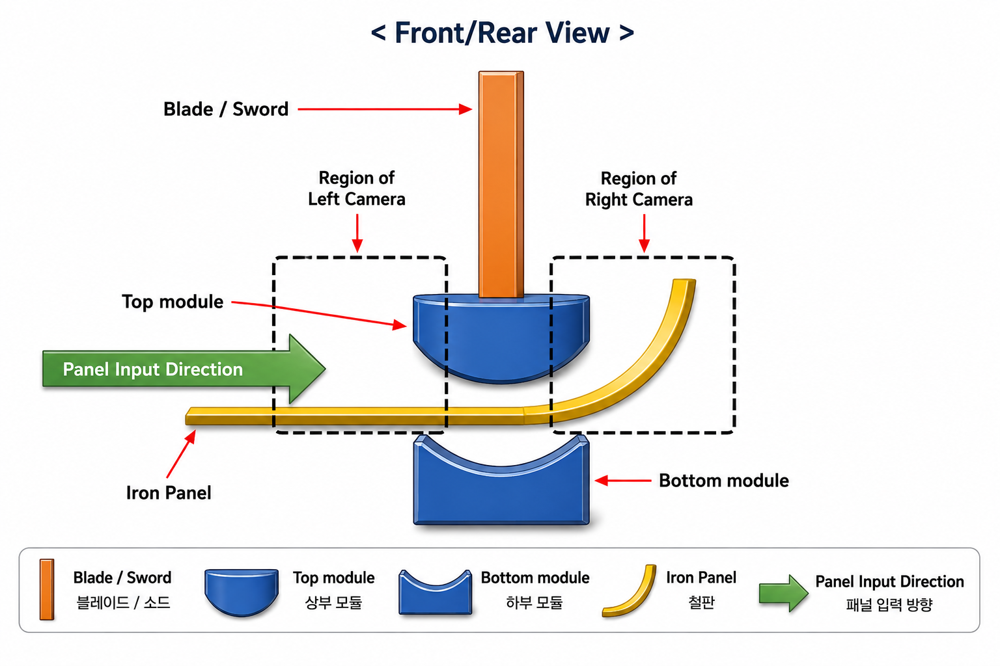
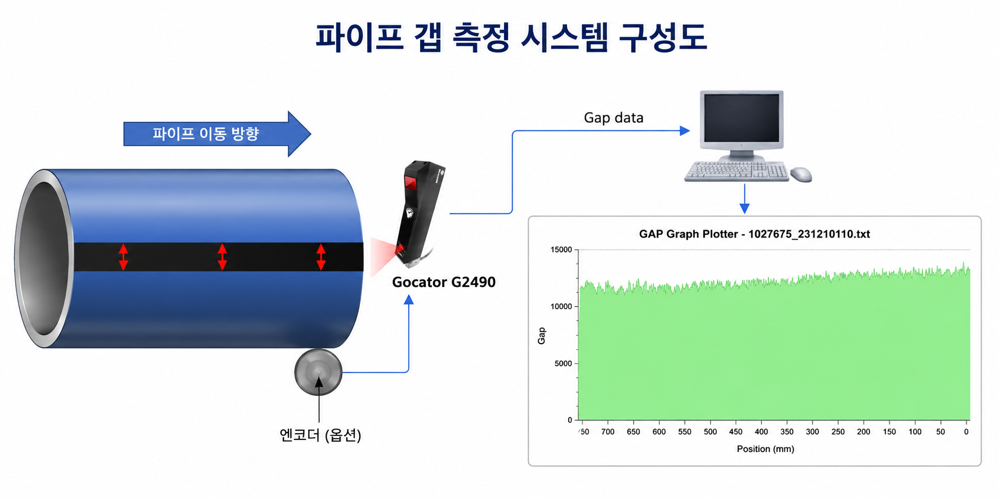
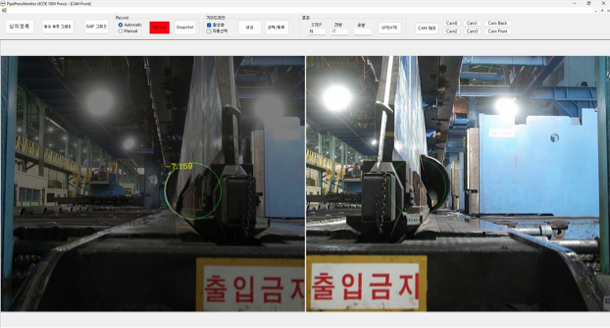
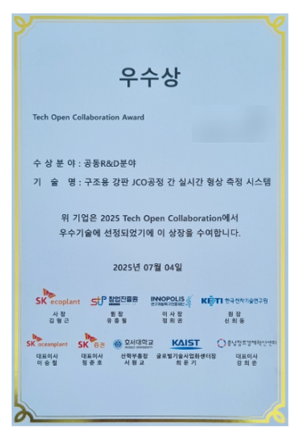
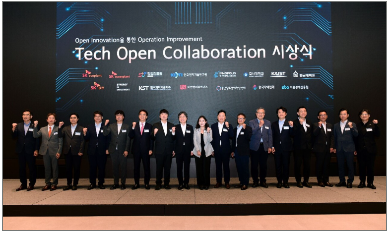

카메라 측정 영역
프레스 상·하부 모듈, 블레이드, 강판 입력 방향, 좌우 카메라 측정 영역
Industrial Vision & Measurement System
Vision 기반 곡률 측정과 2D 레이저 Gap Trend 측정을 결합한 제강 공정 품질 관리 시스템
작업자 경험에 의존하던 성형 판단을 STEP별 반지름, Open Gap, 알람, 이력 데이터 기반의 정량 관리 체계로 전환했습니다.

JCOE 공정은 두꺼운 강판을 J, C, O 단계로 굽혀 원통관을 만드는 공정입니다. 성형 중 반지름과 최종 용접 개구 간격이 목표값에서 벗어나면 용접 불량과 구조적 약점으로 이어질 수 있습니다.
성형 진행 중 형상을 계측하고 시각화하여 작업자가 공정 중 보정 판단을 할 수 있도록 구성했습니다.
C# 운영 시스템, Python Vision 연동, 측정 로직, UI 구성, 제어기 연동 협의, 현장 설치/검증, 운영자 교육을 수행했습니다.
핵심은 작업자의 감각을 대체하는 것이 아니라, 작업자가 다음 프레스 동작을 판단할 수 있는 수치와 추세를 보여주는 것이었습니다.
성형 중에는 카메라 기반 반지름 측정으로 STEP별 형상 변화를 확인하고, 성형 완료 후에는 2D 레이저 프로파일러로 Open Gap을 길이 방향으로 측정합니다.


카메라 기반 반지름 측정은 성형 과정에서 파이프 외곽을 촬영하고, AI 기반 경계 검출 및 보정 로직을 통해 반지름 편차를 계산하는 구조입니다.

각 STEP에서 카메라 영상을 받아 성형 상태의 외곽 정보를 추출합니다.
조명과 배경 영향을 줄이기 위해 Python 기반 이미지 분할/경계 검출을 연동했습니다.
목표 반경 대비 편차를 계산하고 허용 범위 이탈 시 UI에서 즉시 확인할 수 있게 했습니다.
측정 시스템은 프레스 제어 흐름과 연동되어 STEP별 촬영과 기록을 수행합니다. 좌·우 성형 STEP을 구분하고 설비 이벤트에 맞춰 측정 흐름을 이어가도록 구성했습니다.
Open Gap 측정은 성형이 끝난 뒤 용접 준비 간격을 확인하는 단계입니다. 2D 레이저 프로파일러가 파이프 길이 방향으로 단면 프로필을 연속 측정하고, 위치 기준 Gap 데이터로 저장합니다.
| 영역 | 구현 내용 | 핵심 역량 |
|---|---|---|
| 운영 시스템 | Windows 환경 요구에 맞춘 C# HMI와 작업자 화면 구현 | 제조 현장 운영자가 이해할 수 있는 화면, 기록, 알람 중심 설계 |
| 비전 처리 | Python 기반 이미지 분할과 경계 검출 연동 | 딥러닝/영상처리 결과를 실제 계측 UI에 연결 |
| 제어 연동 | 외부 제어기 데이터 수신을 위한 프로토콜 협의와 연동 구조 구성 | 실제 설비 이벤트와 연결된 측정 시스템 구축 |
| 보정 로직 | 체크보드 기반 거리별 실측, 파이프 규격별 거리 정보 매칭 | 센서를 추가하기 어려운 현장 제약을 공정 패턴 분석으로 해결 |
| 현장 적용 | 설치, 운영자 교육, 작업자 사용 기반 검증, 실측값 비교 | 개발부터 현장 안정화까지 end-to-end 수행 |
SK에코플랜트가 주관한 2025 Tech Open Collaboration에 `구조용 강판의 JCO 공정간 실시간 형상 측정 시스템` 기술 주제로 참가해 우수상을 수상했습니다.
카메라 기반 형상 측정과 2D 레이저 Gap 측정을 결합한 현장 적용형 기술성을 인정받았습니다.


카메라 영상에서 제품 형상, 위치, 경계, 편차를 추출해 품질 판단에 연결하는 프로젝트
제어기 신호, 센서 데이터, 작업 조건을 통합해 현장 작업자가 사용할 수 있는 운영 화면을 만드는 프로젝트
공정 중 발생하는 측정값과 알람을 저장하고 제품별 품질 추적 기반을 구축하는 프로젝트